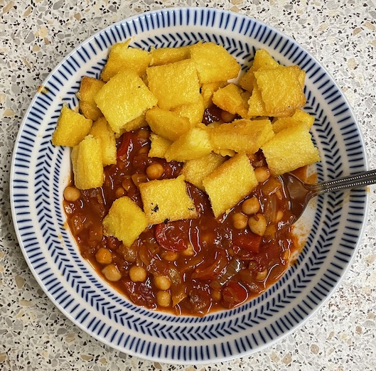

Harissa chickpea stew
- Heat for 15-20 mins until soft
- 3 tbsp oil
- 2 large onions
- 2 red peppers finely chopped
- 1 yellow / orange pepper finely chopped
- Add and cook for 5 mins
- 4 cloves garlic
- 1½ tbsp tomato puree
- 1½ tsp paprika
- 1 tsp bashed cumin seeds
- ¼ tsp salt
- Add and cook for 10 mins
- 2 tomatoes
- 1 tin tomatoes
- 2 sun-dried tomatoes chopped (optional)
- Add and cook for 10 mins
- 1 tin chickpeas with liquid from tin
- 2+ tbsp rose harissa
Serving
Notes
- bulked up with extra pepper and fresh tomatoes so 4 portions
- Belazu rose harissa recommended
Pics
